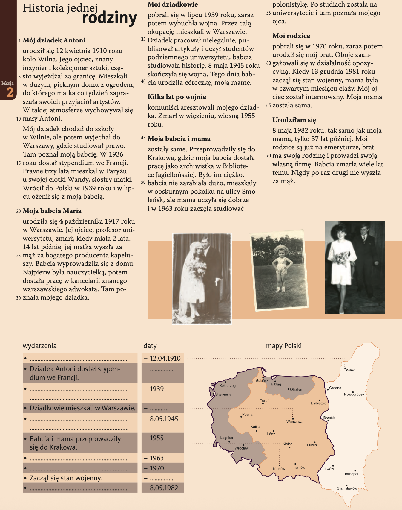
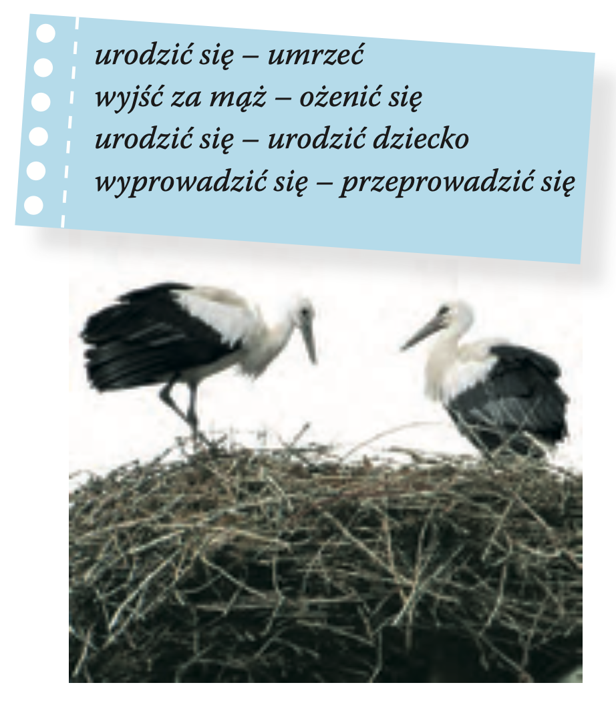
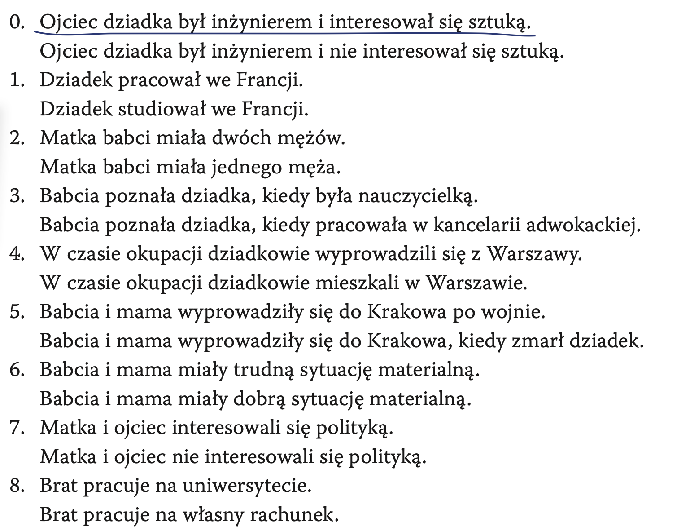
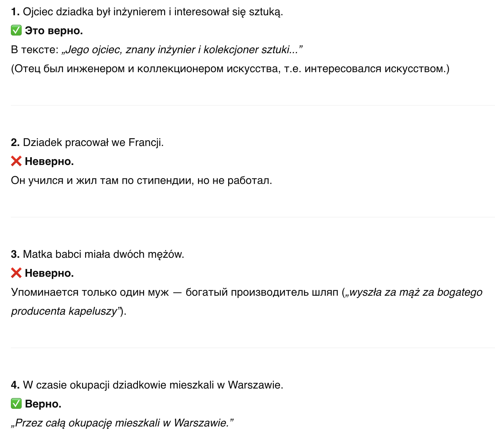
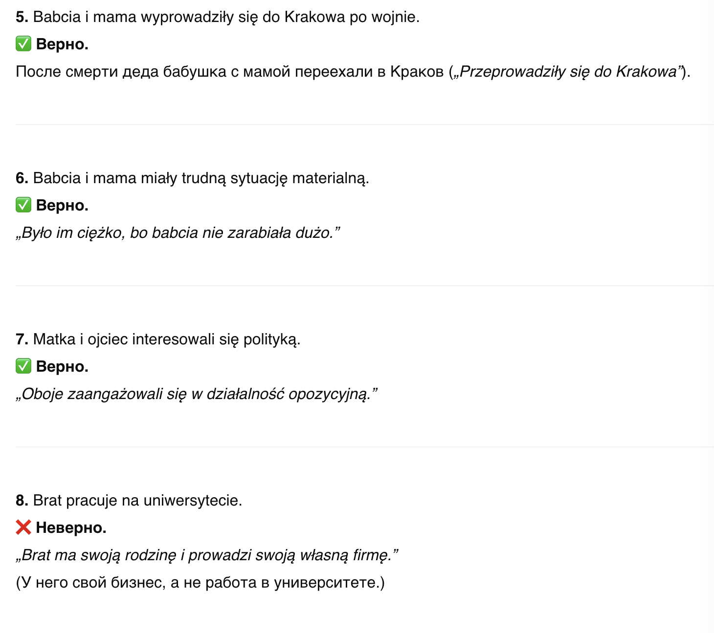
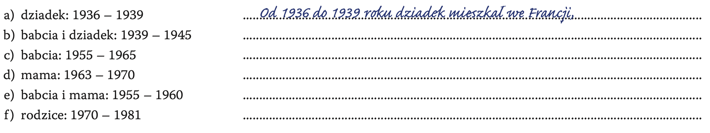
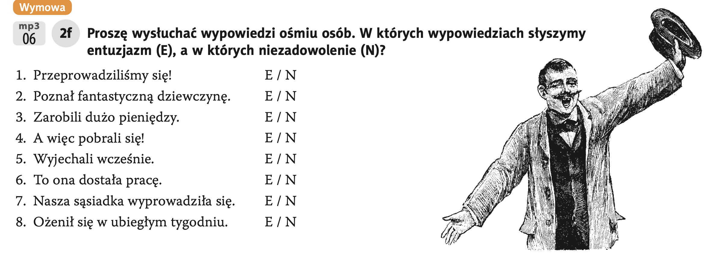

- (drugie zdjęcie) czternastego sierpnia tysiąc dziewięćset dziewięćdziesiątego czwartego roku ⇒ 14.08.1994
- (piąte zdjęcie) dwudziestego pierwszego września dwutysięcznego roku ⇒ 21.09.2000
- (czwarte zdjęcie) w dwa tysiące osiemnastym roku; w listopadzie ⇒ listopad 2018
- (pierwsze zdjęcie) w tysiąc osiemset osiemdziesiątym ósmym roku; w styczniu ⇒ styczeń 1888
- (trzecie zdjęcie) dwunastego kwietnia tysiąc dziewięćset siedemdziesiątego piątego roku ⇒ 12.04.1975
Hura po Polsku - 2
Temat 2 - To już historia.
Lekcja 01 - Moja rodzina — opowiadam o przeszłości
- коммуникативный урок по теме "родословная / история семьи / биография"
Słownictwo nowe >>
 2_A - Proszę przeczytać
tekst i przygotować zestawienie najważniejszych faktów.
2_A - Proszę przeczytać
tekst i przygotować zestawienie najważniejszych faktów.

Odpowiedź
 2_B - Czy to jest to samo?
2_B - Czy to jest to samo?

Odpowiedź
- 1️⃣ urodzić się — umrzeć
Нет, это не то же самое.
- urodzić się — родиться
- umrzeć — умереть
-
2️⃣ wyjść za mąż — ożenić się
Почти то же самое, но с разницей по полу:
- wyjść za mąż — выйти замуж (о женщине)
- ożenić się — жениться (о мужчине)
Смысл — вступить в брак, но используется по-разному для мужчин и женщин.
-
3️⃣ urodzić się — urodzić dziecko
Нет, это разные вещи:
- urodzić się — родиться (ребёнок родился)
- urodzić dziecko — родить ребёнка (мама рожает ребёнка)
-
4️⃣ wyprowadzić się — przeprowadzić się
Не совсем одно и то же:
- wyprowadzić się — съехать с какого-то места (покинуть жильё)
- przeprowadzić się — переехать (сменить место жительства)
2_C - Proszę podkreślić
informację, która jest prawdziwa.

Odpowiedź


 2-D - Proszę napisać, co robiły
w tych latach osoby opisane w tekście Historia jednej rodziny.
2-D - Proszę napisać, co robiły
w tych latach osoby opisane w tekście Historia jednej rodziny.

Odpowiedź
- a) dziadek: 1936 – 1939
👉 Od 1936 do 1939 roku dziadek mieszkał we Francji i studiował prawo.
(С 1936 по 1939 год дедушка жил во Франции и учился на юриста.) - b) babcia i dziadek: 1939 – 1945
👉 W czasie okupacji mieszkali w Warszawie. Dziadek pracował nielegalnie, uczył studentów, a babcia studiowała historię.
(Во время оккупации жили в Варшаве. Дедушка нелегально работал и обучал студентов, бабушка училась на историческом факультете.) - c) babcia: 1955 – 1965
👉 Po śmierci dziadka babcia z mamą przeprowadziły się do Krakowa. Babcia pracowała jako archiwistka w Bibliotece Jagiellońskiej. Było im ciężko finansowo.
(После смерти дедушки бабушка с мамой переехали в Краков. Бабушка работала архивистом в Ягеллонской библиотеке. Было трудно материально.) - d) mama: 1963 – 1970
👉 Mama zaczęła studiować w 1963 roku na uniwersytecie, gdzie poznała mojego ojca. Pobrali się w 1970 roku.
(Мама начала учиться в 1963 году в университете, там познакомилась с отцом. Поженились в 1970 году.) - e) babcia i mama: 1955 – 1960
👉 Mieszkały razem w Krakowie, w małym pokoju przy ulicy Smoleńsk. Mama się uczyła, a babcia pracowała w bibliotece.
(Жили вместе в Кракове, в маленькой комнате на улице Смоленской. Мама училась, бабушка работала в библиотеке.) - f) rodzice: 1970 – 1981
👉 Rodzice pobrali się w 1970 roku. Działali w opozycji politycznej. W 1981 roku ojciec został internowany, a mama była w czwartym miesiącu ciąży.
(Родители поженились в 1970 году. Занимались политической оппозицией. В 1981 году отца интернировали, мама была беременна.)
 2_E - Proszę opowiedzieć
historię z perspektywy:
2_E - Proszę opowiedzieć
historię z perspektywy:
a) dziadka: Urodziłem się na Litwie w 1910 roku...
b) babci c) matki d) ojca e) brata
Odpowiedź
- dziadek
Urodziłem się na Litwie w 1910 roku. Mój ojciec był inżynierem i kolekcjonerem sztuki. Chodziłem do szkoły w Wilnie, później studiowałem prawo w Warszawie. W 1936 roku dostałem stypendium i wyjechałem do Francji. W 1939 roku wróciłem do Polski i ożeniłem się z moją żoną. Podczas wojny mieszkałem w Warszawie i pracowałem nielegalnie, ucząc studentów.
(Родился на Литве в 1910 году…) - babcia
Urodziłam się w Warszawie w 1917 roku. Mój ojciec był profesorem, ale zmarł, gdy miałam dwa lata. Moja mama wyszła za mąż za producenta kapeluszy. Poznałam mojego przyszłego męża w kancelarii adwokackiej. Podczas okupacji studiowałam historię. Po wojnie przeprowadziłam się z córką do Krakowa i pracowałam jako archiwistka w Bibliotece Jagiellońskiej.
(Родилась в Варшаве в 1917 году…) - matka
Urodziłam się po wojnie. Mieszkałam z mamą w Krakowie. W 1963 roku zaczęłam studia na uniwersytecie. Tam poznałam mojego przyszłego męża. Pobraliśmy się w 1970 roku. W latach 80. działaliśmy w opozycji politycznej.
(Родилась после войны…) - ojciec
Poznałem moją żonę na uniwersytecie. Pobraliśmy się w 1970 roku. Działałem w opozycji. W 1981 roku zostałem internowany, a moja żona była wtedy w ciąży.
(Познакомился с женой в университете…) - brat
Mam swoją rodzinę i prowadzę własną firmę. Moi rodzice są już na emeryturze.
(У меня есть своя семья и своя фирма…)
 2_F - Proszę wysłuchać wypowiedzi
ośmiu osób. W których wypowiedziach słyszymy entuzjazm (E), a w których niezadowolenie (N)?
2_F - Proszę wysłuchać wypowiedzi
ośmiu osób. W których wypowiedziach słyszymy entuzjazm (E), a w których niezadowolenie (N)?
(Но мы с тобой не можем сейчас прослушать запись, поэтому давай логически подумаем, как бы это звучало по смыслу — с энтузиазмом или с недовольством.)

Odpowiedź
- Przeprowadziliśmy się!
(Мы переехали!)
➡️ Обычно это звучит с радостью — E (entuzjazm).
- Poznał fantastyczną dziewczynę.
(Он познакомился с фантастической девушкой.)
➡️ Это тоже положительное событие — E.
- Zarobili dużo pieniędzy.
(Они заработали много денег.)
➡️ Тут тоже скорее радость — E.
- A więc pobrali się!
(Так вот, они поженились!)
➡️ Обычно говорят с радостью — E.
- Wyjechali wcześnie.
(Они уехали рано.)
➡️ Тут может быть с недовольством, типа "слишком рано" — N (niezadowolenie).
- To ona dostała pracę.
(Это она получила работу.)
➡️ Тут может быть с завистью или недовольством — N.
- Nasza sąsiadka wyprowadziła się.
(Наша соседка съехала.)
➡️ Зависит от интонации, но часто говорят с радостью — например, если соседка была шумной. Допустим E.
- Ożenił się w ubiegłym tygodniu.
(Он женился на прошлой неделе.)
➡️ Нейтрально или с радостью — пусть будет E.